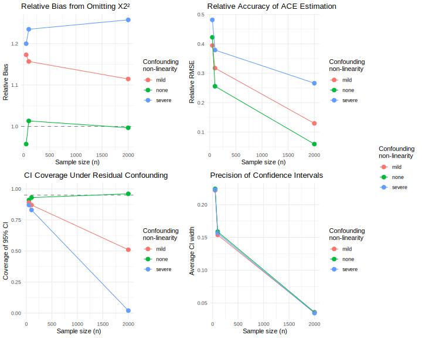

library(rix)
rix(
date = "2025-08-25",
r_pkgs = c(
"rix", "marginaleffects", "simhelpers",
"ggplot2", "doParallel", "doRNG", "cowplot", "dplyr",
"rvinecopulib"
),
ide = "",
project_path = ".",
overwrite = TRUE
)Why Risk it, When You Can {rix} it: A Tutorial for Computational Reproducibility Focused on Simulation Studies
Felipe Fontana Vieira1, Jason Geller2, and Bruno Rodrigues3
1Department of Data Analysis, Ghent University
2Department of Psychology and Neuroscience, Boston College
3Statistics and Data Strategy Departments, Ministry of Research and Higher Education, Luxembourg
Abstract
Keywords: reproducibility, Nix, simulation studies, R, computational methods
Word Count: 5287
Why Risk it, When You Can {rix} it: A Tutorial for Computational Reproducibility Focused on Simulation Studies
Psychological science is in the midst of a credibility revolution, which has prompted substantial progress in how research is conducted and evaluated (Vazire, 2018). Yet, despite notable progress, a key cornerstone of science, reproducibility (i.e., the ability to precisely reproduce the results of a study or studies based on provided data, code, materials, and software/hardware) remains limited (Hardwicke et al., 2020).
Open-science initiatives have encouraged more transparent research practices. Journal incentives such as open-science badges (Kidwell et al., 2016), together with platforms like GitHub and the Open Science Framework, have made data (Levenstein & Lyle, 2018) and code sharing increasingly routine. However, these efforts have largely focused on what is shared rather than how shared materials can be executed in practice. Data and code are never self-sufficient; they depend on a hierarchy of software components known collectively as dependencies, including the version of the programming language, the set of packages used by the analysis, and the system libraries that those packages require in order to function correctly. When these dependencies differ from those used in the original analysis, code may fail, behave differently across machines, or yield conflicting numerical results (Baker et al., 2024; Glatard et al., 2015; Hodges et al., 2023; Nosek et al., 2022).
Reproducibility exists along a continuum (Peng, 2011), ranging from sharing only a manuscript to providing a fully specified computational environment. These issues are particularly acute for simulation studies, which rely on complex codebases, versioned dependencies, and intricate software configurations (Luijken et al., 2024; Siepe et al., 2024).
A figure highlighting this might be good here (JG)
To be clarified: what “this” refers to? (FV)
In this article, we use computational environment to refer to the complete software context required for an analysis to run successfully—the programming language version, package versions, system libraries, and operating system (Rodrigues, 2023; Rodrigues & Baumann, 2026). We define computational environment reproducibility as the ability to reconstruct this entire software stack on any machine and at any future time, such that executing the same code yields the same numerical results.
Empirical assessments show that current practice falls short of this ideal. Siepe et al. (2024) report that nearly two-thirds of simulation studies in psychology provide no accompanying code, and among those that do, documentation of the computational environment is rarely included. This gap is consequential: simulation studies inform methodological recommendations, meaning that insufficient reproducibility undermines confidence in those recommendations (Luijken et al., 2024; White et al., 2024).
These challenges persist because researchers must navigate a fragmented landscape of solutions, each addressing only part of the problem. Package-level managers such as {renv} (Ushey, 2024) and {groundhog} (Simonsohn, 2020) stabilize R package versions but do not manage the R interpreter itself or the system-level libraries those packages depend on. Workflow orchestration tools such as {targets} (Landau, 2021) and Make (Feldman, 1979) support reproducibility in a different sense: they specify the structure of an analysis by formalizing the order in which steps should run and by tracking dependencies among intermediate results. These tools clarify how an analysis proceeds, but they assume that the software stack required to run each step is already stable. Containerization tools such as Docker and the Rocker project (Boettiger, 2015; Boettiger & Eddelbuettel, 2017) offer a more comprehensive approach by bundling the full environment—operating system, system libraries, interpreter versions, and packages—into a single executable image. Yet their use requires familiarity with Linux system administration, and even containerization may suffer from temporal drift when Dockerfiles rely on mutable upstream repositories (Malka et al., 2024). For a detailed comparison of these tools and their limitations, see Rodrigues and Baumann (2026).
Researchers thus face a difficult choice between solutions that are accessible but incomplete or approaches that are powerful but demand substantial technical expertise.
In this article, we focus specifically on computational environment reproducibility as the foundation upon which other reproducibility practices depend. For that, we introduce Nix (Dolstra et al., 2004), a functional package manager designed to make software installation deterministic, and {rix} (Rodrigues & Baumann, 2025), an R interface that allows researchers to use Nix without needing deep knowledge of its underlying language or infrastructure. Our objective is not to introduce a specific workflow orchestration system or to prescribe a particular analytic structure. Instead, we aim to show how Nix and {rix} can establish a stable, cross-platform environment within which any analysis—whether organized through simple, documented script sequences using source() or through more formal orchestration tools—can be executed reliably.
We illustrate these ideas through a reproducible simulation study conducted in R (Example 1), culminating in an automated APA-formatted manuscript generated with apaquarto (Schneider, 2024) (Example 2). Although the example centers on R because of its prominence in psychological methodology, the principles underlying environment reproducibility apply equally to other languages, including Python and Julia, and to different development environments such as RStudio, VS Code, Emacs, or Positron. Later in the article, we briefly comment on {rixpress} (Rodrigues, 2025), which extends Nix-based reproducibility to workflows requiring more sophisticated coordination across languages. Unlike {targets}, which is limited to R-based workflows, {rixpress} is designed for polyglot pipelines. This distinction is conceptually relevant, but workflow orchestration is not the focus of the present tutorial, which assumes a basic, documented execution order for scripts. Throughout, our emphasis remains squarely on the reproducibility of computational environments as the essential basis for transparent, reliable, and durable scientific workflows.
A Practical Example: Setting up a Reproducible Simulation Study with {rix}
Before proceeding with the technical implementation and tutorial, we refer readers to the Appendix A, which presents a simulation study scenario designed to ground the subsequent discussion in a concrete example1. The scenario mimics a typical methods manuscript, describing both the statistical design and the computational details one might encounter in practice. While the example is illustrative rather than substantive—readers can follow the tutorial without engaging with its particulars—we include it to anchor the discussion in something more tangible.
Simulation studies typically structure code into multiple component files, each handling a distinct analytical phase. Our implementation follows this convention, organizing the workflow into five sequential files2: data generation function (01_data_generation.R), statistical model specification (02_models.R), simulation execution (03_run_simulation.R), performance metric calculation (04_performance_metrics.R), and results visualization (05_plots.R). The simulation script (03_run_simulation.R) sources the data generation and model functions, executes the Monte Carlo replications, and saves results. The subsequent scripts read these saved results to compute performance metrics and generate visualizations. For convenience, we provide a master script (06_run_all.R) that loads all required packages and executes the complete workflow sequentially. Note that such sequential structures could benefit from explicit workflow orchestration tools and a clear documentation3. Therefore, this workflow depends on several R packages and more. The data generation depends on the {rvinecopulib} package (Nagler & Vatter, 2025). The {marginaleffects} provides the function for computing average causal effects (Arel-Bundock et al., 2024). The {dplyr} package is used for data wrangling (Wickham et al., 2023) and {simhelpers} supplies the functions for calculating the simulation performance metrics (Joshi & Pustejovsky, 2025). Parallel processing is handled by {doParallel} (Corporation & Weston, 2022), with {doRNG} (Gaujoux, 2025) ensuring reproducible random number generation across parallel workers. Visualization relies on {ggplot2} (Wickham, 2016) and {cowplot} (Wilke, 2025).
Now, suppose a researcher would have access to the .R files and attempts to run the simulation. What might prevent them from obtaining identical results?. The most immediate concern may involve package versions. A researcher installing packages today may encounter errors if functions have been renamed or deprecated, or may obtain results that differ subtly due to changes in computational defaults. Beyond package versions, some R packages depend on system-level libraries that must be installed separately from R itself. Our simulation illustrates this directly: the {rvinecopulib} package provides an interface to a C++ library and links against Boost, Eigen, and RcppThread (Nagler & Vatter, 2025). Moreover, the R language itself introduces version dependencies. Code written with R 4.3 may use syntax or functions unavailable in R 4.0. More subtly, R’s random number generator has changed across major versions, meaning that identical code with identical seeds can produce different random sequences depending on the R version. For simulation studies where reproducibility of specific random draws matters, this version sensitivity is consequential. Moreover, if one also employs literate programming for the manuscript, additional dependencies arise: R Markdown or Quarto documents require pandoc, and PDF output requires a LaTeX distribution—each with its own versioning and platform-specific installation.
Nix and {rix}: A Comprehensive Solution
Nix is a package manager built around declarative, isolated environments rather than ad hoc system-level installations. Unlike familiar tools such as install.packages() in R or apt-get on Linux, Nix manages language versions, package versions, system dependencies, and cross-platform consistency through a single framework (Rodrigues & Baumann, 2025). Rather than modifying shared directories, Nix builds each environment as an explicit, self-contained specification. This addresses the fragmented landscape described before: where researchers currently must coordinate separate tools for package management, interpreter versions, and system dependencies, Nix handles all three within a unified declarative model.
Core Principles
Rather than installing software into global directories (e.g., /usr/lib), Nix places every package in its own directory under /nix/store. Each package path contains a cryptographic hash representing its precise inputs—source code, dependencies, and build instructions. Because these paths are content-addressed, multiple versions of the same software can coexist without conflict. A researcher can, for example, maintain projects requiring R 4.1.0 and R 4.3.3 side by side, or use different package versions across analyses, switching between them seamlessly (Rodrigues & Baumann, 2025).
The Nix ecosystem is built around nixpkgs, a version-controlled repository comprising more than 120,000 packages, including nearly all of CRAN and Bioconductor. By pinning a specific commit or date, researchers freeze the entire software stack—R itself, R packages, and all system libraries—at that point in time. This eliminates the system-dependency problems that tools like renv cannot address (Rodrigues & Baumann, 2025).
This architecture also ensures stability over time. Empirical work has shown strong rebuildability and reproducibility rates for historical nixpkgs snapshots (Rodrigues & Baumann, 2026). Combined with binary caches, which often allow environments to materialize in seconds, Nix becomes practical for interactive research workflows (Rodrigues & Baumann, 2025).
The {rix} Package: R Interface to Nix
Nix expressions are written in a dedicated functional language unfamiliar to most researchers. The {rix} package removes this barrier by providing an R-native interface. A single call to rix() generates complete Nix configurations from standard R syntax, specifying R versions, CRAN packages, system libraries, and even Python or Julia components when required. Users never need to read or write Nix code directly, as {rix} performs the translation automatically (Rodrigues & Baumann, 2025).
A key feature of {rix} is its integration with rstats-on-nix, a community-maintained fork offering daily CRAN snapshots and weekly tested environments on Linux and macOS. Researchers can request, for example, rix(date = "2024-12-14") to obtain a validated and reproducible environment without manually assessing compatibility. After the configuration is generated, nix_build() instantiates the environment, and binary caches typically allow this to complete within seconds (Rodrigues & Baumann, 2025).
Although Nix is capable of replacing tools like Docker for isolation or {renv} for package management, it does not require an all-or-nothing transition. Researchers can adopt it gradually and use it alongside familiar tooling. For instance, by building Docker images with Nix, converting existing {renv} lockfiles, or running {targets} pipelines within a Nix-defined environment (Rodrigues & Baumann, 2025). This allows Nix to strengthen reproducibility while preserving established workflows. For projects requiring more sophisticated pipeline management, {rixpress} extends Nix’s guarantees to workflow orchestration, enabling step-level isolation across languages, though such capabilities lie beyond the present focus on environment reproducibility. We will come back to this after the tutorial.
Step I: Installing Nix and {rix}
Before proceeding, you will need to install both Nix and the {rix} R package. Installation procedures differ across operating systems (Windows via WSL2, Linux, and macOS), and detailed, up-to-date instructions are maintained in the official {rix} documentation:
- Linux and Windows (WSL2): https://docs.ropensci.org/rix/articles/b1-setting-up-and-using-rix-on-linux-and-windows.html
- macOS: https://docs.ropensci.org/rix/articles/b2-setting-up-and-using-rix-on-macos.html
Once Nix is installed, {rix} can be installed from CRAN using install.packages("rix"), or directly through Nix without requiring a pre-existing R installation (see the documentation links above for details).
It is worth noting that {rix} can generate Nix expressions even without Nix installed on your system—you can write a default.nix file without Nix, but you cannot build or enter the resulting environment unless Nix is installed (Rodrigues & Baumann, 2025).
Step II: Specifying the Computational Environment
The initial step in establishing a reproducible environment is to create a script that will generate the environment specification. We recommend creating a file named generate_env.R (or similar) in the project directory. This script will use the rix() function from the {rix} package to produce a default.nix file—a declarative specification that precisely defines all software dependencies required for the project.
For solely the simulation study (Example 1), we would implement the environment specification shown below (Listing 1):
In the case where we use literate programming for generating the manuscript (Example 2), we implement the following environment specification, which can be found on the GitHub repository as a file named generate_env.R (Listing 2):
library(rix)
rix(
date = "2025-08-25", # line 1
r_pkgs = c( # line 2
"rix", "quarto", "knitr", "marginaleffects", "simhelpers",
"ggplot2", "doParallel", "doRNG", "cowplot", "dplyr", "svglite",
"rvinecopulib"
),
system_pkgs = c("quarto"), # line 3
tex_pkgs = c( # line 4
"amsmath", "ninecolors", "apa7", "scalerel", "threeparttable",
"threeparttablex", "endfloat", "environ", "multirow", "tcolorbox",
"pdfcol", "tikzfill", "fontawesome5", "framed", "newtx",
"fontaxes", "xstring", "wrapfig", "tabularray", "siunitx",
"fvextra", "geometry", "setspace", "fancyvrb", "anyfontsize"
),
ide = "rstudio", # line 5
project_path = ".", # line 6
overwrite = TRUE # line 7
)Note that we have more than just the R packages specified for the simulation scripts. This happens because we also included what is needed for the manuscript generation, not solely for the simulation code. In Appendix B, we mention more specifically the reasons for adding each package in r_pkgs() and tex_pkgs(). For now, we focus more on clarifying the different arguments for the rix() function.
The Environment Generation Script
The rix() function4 constructs this specification through a series of parameters that collectively describe the computational environment. Each parameter serves a distinct purpose in defining the environment’s characteristics.
Specifying the R version (line 1).
Researchers must first determine which version of R to use. This can be accomplished in two ways: The r_ver argument accepts an exact version string (e.g., “4.3.3”) or special designations such as “latest-upstream” for the most recent stable release. Alternatively, the date argument specifies a particular date (e.g., “2024-11-15”), which ensures that R and all packages correspond to the versions available on that date. The date-based approach is generally preferable for reproducibility, as it captures a complete snapshot of the R ecosystem at a single point in time. For this tutorial, as shown on top, we use the date parameter to ensure temporal consistency across all software components (Rodrigues & Baumann, 2025) (see {rix} documentation for more: https://docs.ropensci.org/rix/articles/d2-installing-system-tools-and-texlive-packages-in-a-nix-environment.html).
Declaring R package dependencies (line 2).
The r_pkgs argument accepts a character vector listing all required R packages by their CRAN names. These packages will be installed from the version repository corresponding to the specified date or R version. It is important to list all packages that the analysis will load directly; dependencies of these packages are automatically resolved by Nix. For packages requiring specific versions not corresponding to the chosen date, researchers can specify exact versions using the syntax "packagename@version" (e.g., "ggplot2@2.2.1"). For packages available only on GitHub or other Git repositories, the git_pkgs argument accepts a list structure containing repository URLs and specific commit hashes. For example:
git_pkgs = list(
package_name = "marginaleffects",
repo_url = "https://github.com/vincentarelbundock/marginaleffects",
commit = "304bff91dc31ae28b227a8485bfa4f7bdc86d625"
)This ensures that exact development versions are obtained (Rodrigues & Baumann, 2025). For our simulation study, all packages were used with their CRAN versions (see {rix} documentation for more details: https://docs.ropensci.org/rix/articles/d2-installing-system-tools-and-texlive-packages-in-a-nix-environment.html).
Including system-level dependencies (line 3).
Many R-based workflows require tools beyond R packages. The system_pkgs parameter specifies system-level software such as Quarto for document generation, Git for version control, or Pandoc for document conversion. Critically, we include Quarto as a system package because this tutorial demonstrates full computational reproducibility—not merely of the simulation code, but of the complete manuscript itself. Our manuscript uses the apaquarto extension for APA formatting, stored in the project’s _extensions/ directory (Rodrigues & Baumann, 2025) (see {rix} documentation for more: https://docs.ropensci.org/rix/articles/d2-installing-system-tools-and-texlive-packages-in-a-nix-environment.html).
Specifying LaTeX packages (line 4).
The tex_pkgs parameter specifies LaTeX packages needed for PDF compilation. When any packages are listed, Nix automatically includes a minimal TexLive distribution (scheme-small) as a base, to which the specified packages are added. Determining the required LaTeX packages typically involves some trial and error—Quarto’s error messages during, for example, the PDF rendering indicate which packages are missing, and these can then be added to tex_pkgs (see {rix} documentation for more: https://docs.ropensci.org/rix/articles/d2-installing-system-tools-and-texlive-packages-in-a-nix-environment.html).
Configuring the development environment (line 5).
The ide parameter determines whether an integrated development environment should be included in the Nix environment. Setting ide = "rstudio" installs a project-specific version of RStudio within the Nix environment. This is required for RStudio because, unlike other editors, RStudio cannot interact with Nix shells unless it is itself installed via Nix. Note that on macOS, RStudio is only available through Nix for R versions 4.4.3 or later (or dates after 2025-02-28); for earlier versions, alternative editors must be used. Other supported IDEs include Positron (ide = "positron"), Visual Studio Code (ide = "code"), and command-line tools such as Radian (ide = "radian"). These editors can either be installed within the Nix environment using the ide parameter, or researchers can use an already-installed version by setting ide = "none" (or ide = "other") and configuring direnv to automatically load the Nix environment when opening the project folder. Each IDE installed via Nix is project-specific and will not interfere with system-wide installations. See the {rix} documentation for detailed configuration instructions: https://docs.ropensci.org/rix/articles/e-configuring-ide.html.
Setting file output parameters (line 6 and 7).
The project_path parameter indicates where the default.nix file should be written (“.” denotes the current directory), while overwrite controls whether an existing file should be replaced. Adding to this, setting print = TRUE, which is another argument, displays the generated specification in the console for immediate verification (Rodrigues & Baumann, 2025).
Multi-language environment support.
While this tutorial focuses on R, researchers working across multiple programming languages can include Python or Julia in their environments. The py_conf parameter accepts a list specifying a Python version and required packages (e.g., py_conf = list(py_version = "3.12", py_pkgs = c("polars","pandas"))). Similarly, jl_conf enables Julia package installation. This capability is particularly useful, for example, for projects requiring statistical computing in R alongside machine learning pipelines in Python or numerical optimization in Julia (Rodrigues & Baumann, 2025) (see {rix} documentation for more: https://docs.ropensci.org/rix/articles/d1-installing-r-packages-in-a-nix-environment.html).
Generating the Environment Specification
To execute the script for Example 2, either run from the terminal Rscript generate_env.R, source it from within R using source("generate_env.R"), or run the rix::rix() function above. This will generate the default.nix file in the project directory. This file serves as the formal, machine-readable specification of the computational environment. Importantly, rix() automatically invokes rix_init(), which creates a project-specific .Rprofile file that prevents package library conflicts and disables install.packages() to maintain environment integrity. There may be exemptions to this, which we comment briefly in the next section.
Step III: Building and Using the Reproducible Environment
Once the default.nix file has been generated, the next step is to build the environment and use it to reproduce either the simulation analyses or the complete manuscript. This section demonstrates both workflows.
Building the Environment
From the terminal, navigate to the study directory containing the default.nix file and execute (Listing 4):
nix-buildThis command builds the environment according to the specification. The first execution will download and install all required packages, which may take a few minutes depending on network speed and system resources. Subsequent builds use cached packages and complete in seconds. Upon successful completion, a symbolic link named result appears in the project directory, pointing to the constructed environment in the Nix store.
To activate the environment, run (Listing 5):
nix-shellThis command drops the user into a shell where all specified packages and tools are available. The shell prompt typically changes to indicate that a Nix environment is active (e.g., [nix-shell:~/project]$).
As mentioned, it is worth noting that Nix shells do not fully isolate you from your existing system by default. For R users, this has a practical implication: packages installed in your regular R library (outside of Nix) could potentially be loaded when running R from within the Nix environment. The {rix} package addresses this automatically—when you call rix(), it also executes rix_init(), which creates a project-specific .Rprofile. This file configures R to ignore external package libraries and also disables install.packages() within the environment. The rationale is straightforward: any new packages should be added to default.nix and the environment rebuilt, preserving full reproducibility (Rodrigues & Baumann, 2025). However, for stricter isolation5 that also prevents access to other system programs not specified in default.nix, use the --pure flag (Listing 6):
nix-shell --pureReproducing the Simulation (Example 1)
As described before, our Example 1 contains multiple scripts. For streamlined execution, we provide a master script (06_run_all.R) that runs the complete simulation and calculates the results as well as visualizations. The script begins by loading the required packages, then proceeds through three steps: first, it sources 03_run_simulation.R, which in turn loads the data generation function (01_data_generation.R) and the model estimation functions (02_models.R) to run the Monte Carlo simulation; second, it sources 04_performance_metrics.R to calculate the performance criteria from the saved simulation results; and third, it sources 05_plots.R to generate the figures (see Figure 1). The script has the following content (Listing 7):
library(marginaleffects); library(simhelpers); library(rvinecopulib)
library(doParallel); library(doRNG); library(ggplot2); library(cowplot);
library(dplyr)
source("03_run_simulation.R")
source("04_performance_metrics.R")
source("05_plots.R")Thus, to reproduce the simulation from within the Nix shell, meaning after running nix-build and nix-shell (Listing 8):
Rscript 06_run_all.RAlternatively, individual scripts can be executed separately (i.e., Rscript 03_run_simulation.R)). Therefore, the key advantage of executing within nix-shell is that all dependencies—R version, packages, and system tools—match exactly those specified in default.nix.
Reproducing the Complete Manuscript (Example 2)6
Beyond reproducing computational results, the Nix environment enables full manuscript reproducibility. The manuscript source file (article.qmd) combines narrative text, executable code chunks, and references to simulation outputs. In our specific case, we integrate the simulation run itself in the manuscript as well as the reporting (i.e., performance metrics calculation and visualization). In other words, the code in the separate .R files are included as code chunks (see article.qmd in the GitHub repository).
This is not needed and most researchers would in fact probably not include the simulation run itself in the manuscript as many simulations take days to be completed. Thus, in this case, one could just proceed with the Rscript 03_run_simulation.R inside the nix shell. Then, in the article.qmd load the obtained results and integrate the code chunks that produce the performance metrics and visualization (see Figure 1).
To render the manuscript (Listing 9):
quarto render article.qmdThis command executes all code chunks in the manuscript, incorporates results and figures, and generates a formatted PDF following APA style guidelines via the apaquarto extension (Schneider, 2024). This extension is saved in the project repo already.
To download this extension for your own work you can install the extension by using the terminal (Listing 10):
quarto use template wjschne/apaquartoor in the console (Listing 11):
quarto::quarto_use_template("wjschne/apaquarto")The final document (.pdf or .html) is saved directly in the project folder. Because Quarto is installed as a system-level package in our Nix specification, the rendering occurs entirely within a fully reproducible environment, ensuring consistent output across machines regardless of local software configurations. If desired, the manuscript can also be reproduced interactively by opening the project folder in the user’s preferred IDE and running the code chunks directly.
Additional Considerations for Advanced Workflows
Workflow Orchestration: {targets} and {rixpress}
Complex simulation studies often benefit from workflow management systems that track dependencies between computational steps, cache intermediate results, and enable selective re-execution when inputs change. Two complementary approaches exist within the Nix ecosystem: using {targets} inside a Nix environment, or using {rixpress} to leverage Nix itself as the build automation tool.
Using {targets} within Nix. As mentioned, the {targets} package (Landau, 2021) provides workflow orchestration for R-based projects. This combination ensures both computational reproducibility (via Nix controlling the environment) and computational efficiency (via targets’ intelligent caching). To integrate {targets} with Nix, simply include “targets” in the r_pkgs parameter of rix(), and execute the pipeline within nix-shell using Rscript -e 'targets::tar_make()'. The {targets} metadata directory (_targets/) should be excluded from version control while the _targets.R configuration file should be committed alongside default.nix (Rodrigues & Baumann, 2025). This approach is ideal for projects that remain within the R ecosystem and do not require different computational environments for different pipeline steps (see {rix} documentation: https://docs.ropensci.org/rix/articles/z-advanced-topic-reproducible-analytical-pipelines-with-nix.html).
Using {rixpress} for polyglot pipelines. The {rixpress} package (Rodrigues, 2025), a sister package to {rix}, uses Nix itself as the build automation tool rather than operating within a Nix environment. Each pipeline step becomes a Nix derivation, providing hermetic builds with sandboxed execution and content-addressable caching. The key advantage of {rixpress} emerges in multi-language workflows: different steps can execute in different Nix-defined environments (e.g., one step using R 4.2.0 with specific packages, another using Python 3.12 with machine learning libraries, another using Julia for numerical optimization). The package interface, inspired by {targets}, uses functions like rxp_r(), rxp_py(), and rxp_jl() to define pipeline steps, with automatic serialization handling data transfer between languages. Objects are stored in the Nix store and can be inspected interactively using helper functions like rxp_read() and rxp_load() (see {rixpress} documentation: https://docs.ropensci.org/rixpress/articles/intro-concepts.html).
Converting Existing {renv} Projects
Many researchers have existing projects using {renv} for package management. The renv2nix() function facilitates migration by reading an renv.lock file and generating an equivalent Nix specification. This conversion is particularly valuable for projects where {renv} encountered system dependency issues or where stricter reproducibility guarantees are desired. However, researchers should note that while {renv} snapshots R package versions, Nix additionally pins system libraries and compilers, potentially exposing previously hidden dependencies on system configuration (Rodrigues & Baumann, 2025) (see {rix} documentation: https://docs.ropensci.org/rix/articles/f-renv2nix.html).
Containerization with Docker
Institutions with existing Docker-based infrastructure may wish to combine Nix with containers. While this might seem redundant—both technologies provide isolation—the combination offers complementary benefits: Nix ensures bit-reproducible builds across systems, while Docker provides a familiar deployment mechanism for non-Nix-aware computing environments. The approach is to use Nix as the base layer within a Docker container (Rodrigues & Baumann, 2025). This strategy is particularly relevant, for example, for projects requiring deployment to cloud computing platforms or high-performance computing clusters where Docker is the standard containerization technology (see {rix} documentation: https://docs.ropensci.org/rix/articles/z-advanced-topic-using-nix-inside-docker.html).
Discussion
References
Arel-Bundock, V., Greifer, N., & Heiss, A. (2024). How to interpret statistical models using marginaleffects for R and Python. Journal of Statistical Software, 111(9), 1–32. https://doi.org/10.18637/jss.v111.i09
Baker, D. H., Berg, M., Hansford, K., Quinn, B., Segala, F., & Warden-English, E. (2024). ReproduceMe: Lessons from a pilot project on computational reproducibility. Meta-Psychology, 8, MP.2023.4021. https://doi.org/10.15626/MP.2023.4021
Boettiger, C. (2015). An introduction to Docker for reproducible research. ACM SIGOPS Operating Systems Review, 49(1), 71–79. https://doi.org/10.1145/2723872.2723882
Boettiger, C., & Eddelbuettel, D. (2017). An introduction to Rocker: Docker containers for R. The R Journal, 9(2), 527–536. https://doi.org/10.32614/RJ-2017-065
Corporation, M., & Weston, S. (2022). doParallel: Foreach parallel adaptor for the ’parallel’ package. https://CRAN.R-project.org/package=doParallel
Dolstra, E., De Jonge, M., & Visser, E. (2004). Nix: A safe and policy-free system for software deployment. 18th Large Installation System Administration Conference, 79–92.
Feldman, S. I. (1979). Make — a program for maintaining computer programs. Software: Practice and Experience, 9(4), 255–265. https://doi.org/10.1002/spe.4380090402
Gaujoux, R. (2025). doRNG: Generic reproducible parallel backend for ’foreach’ loops. https://CRAN.R-project.org/package=doRNG
Glatard, T., Lewis, L. B., Ferreira da Silva, R., Adalat, R., Beck, N., Lepage, C., Rioux, P., Rousseau, M.-É., Sherif, T., Deelman, E., Khalili-Mahani, N., & Evans, A. C. (2015). Reproducibility of neuroimaging analyses across operating systems. Frontiers in Neuroinformatics, 9, 12. https://doi.org/10.3389/fninf.2015.00012
Hardwicke, T. E., Wallach, J. D., Kidwell, M. C., Bendixen, T., Crüwell, S., & Ioannidis, J. P. A. (2020). An empirical assessment of transparency and reproducibility-related research practices in the social sciences (20142017). Royal Society Open Science, 7(2), 190806. https://doi.org/10.1098/rsos.190806
Hodges, C. B., Stone, B. M., Johnson, P. K., Carter, J. H., III, Sawyers, C. K., Roby, P. R., & Lindsey, H. M. (2023). Researcher degrees of freedom in statistical software contribute to unreliable results: A comparison of nonparametric analyses conducted in SPSS, SAS, Stata, and R. Behavior Research Methods, 55(6), 2813–2837. https://doi.org/10.3758/s13428-022-01932-2
Joshi, M., & Pustejovsky, J. (2025). Simhelpers: Helper functions for simulation studies. https://CRAN.R-project.org/package=simhelpers
Kidwell, M. C., Lazarević, L. B., Baranski, E., Hardwicke, T. E., Piechowski, S., Falkenberg, L.-S., Kennett, C., Slowik, A., Sonnleitner, C., Hess-Holden, C., Errington, T. M., Fiedler, S., & Nosek, B. A. (2016). Badges to acknowledge open practices: A simple, low-cost, effective method for increasing transparency. PLOS Biology, 14(5), e1002456. https://doi.org/10.1371/journal.pbio.1002456
Landau, W. M. (2021). Targets: Dynamic function-oriented make-like declarative workflows.
Levenstein, M. C., & Lyle, J. A. (2018). Data: Sharing is caring. Advances in Methods and Practices in Psychological Science, 1(1), 95–103.
Luijken, K., Lohmann, A., Alter, U., Claramunt Gonzalez, J., Clouth, F. J., Fossum, J. L., Hesen, L., Huizing, A. H. J., Ketelaar, J., Montoya, A. K., Nab, L., Nijman, R. C. C., Penning de Vries, B. B. L., Tibbe, T. D., Wang, Y. A., & Groenwold, R. H. H. (2024). Replicability of simulation studies for the investigation of statistical methods: The RepliSims project. Royal Society Open Science, 11(1), 231003. https://doi.org/10.1098/rsos.231003
Malka, J., Zacchiroli, S., & Zimmermann, T. (2024). Reproducibility of build environments through space and time. Proceedings of the 2024 ACM/IEEE 44th International Conference on Software Engineering: New Ideas and Emerging Results, 97–101. https://doi.org/10.1145/3639476.3639767
Morris, T. P., White, I. R., & Crowther, M. J. (2019). Using simulation studies to evaluate statistical methods. Statistics in Medicine, 38(11), 2074–2102. https://doi.org/10.1002/sim.8086
Nagler, T., & Vatter, T. (2025). Rvinecopulib: High performance algorithms for vine copula modeling. https://CRAN.R-project.org/package=rvinecopulib
Nosek, B. A., Hardwicke, T. E., Moshontz, H., Allard, A., Corker, K. S., Dreber, A., Fidler, F., Hilgard, J., Kline Struhl, M., Nuijten, M. B., Rohrer, J. M., Romero, F., Scheel, A. M., Scherer, L. D., Schönbrodt, F. D., & Vazire, S. (2022). Replicability, robustness, and reproducibility in psychological science. Annual Review of Psychology, 73, 719–748. https://doi.org/10.1146/annurev-psych-020821-114157
Pawel, S., Bartoš, F., Siepe, B. S., & Lohmann, A. (2025). Handling missingness, failures, and non-convergence in simulation studies: A review of current practices and recommendations. The American Statistician, 1–18. https://doi.org/10.1080/00031305.2025.2540002
Peng, R. D. (2011). Reproducible research in computational science. Science, 334(6060), 1226–1227.
Rodrigues, B. (2023). Building reproducible analytical pipelines with R. https://raps-with-r.dev
Rodrigues, B. (2025). Rixpress: Build reproducible analytical pipelines with ’nix’. https://CRAN.R-project.org/package=rixpress
Rodrigues, B., & Baumann, P. (2025). Rix: Reproducible data science environments with ’nix’. https://CRAN.R-project.org/package=rix
Rodrigues, B., & Baumann, P. (2026). Nix for polyglot, reproducible data science workflows (Version v0.0.1). Zenodo. https://doi.org/10.5281/zenodo.18138618
Schneider, W. J. (2024). Apaquarto [Computer software]. https://github.com/wjschne/apaquarto
Siepe, B. S., Bartoš, F., Morris, T. P., Boulesteix, A.-L., Heck, D. W., & Pawel, S. (2024). Simulation studies for methodological research in psychology: A standardized template for planning, preregistration, and reporting. Psychological Methods. https://doi.org/10.1037/met0000695
Simonsohn, U. (2020). Groundhog: Version-control for CRAN, github, and gitlab packages.
Ushey, K. (2024). Renv: Project environments.
Vazire, S. (2018). Implications of the Credibility Revolution for Productivity, Creativity, and Progress. Perspectives on Psychological Science, 13(4), 411–417. https://doi.org/10.1177/1745691617751884
White, I. R., Pham, T. M., Quartagno, M., & Morris, T. P. (2024). How to check a simulation study. International Journal of Epidemiology, 53(1), dyad134. https://doi.org/10.1093/ije/dyad134
Wickham, H. (2016). ggplot2: Elegant graphics for data analysis. Springer-Verlag New York. https://ggplot2.tidyverse.org
Wickham, H., François, R., Henry, L., Müller, K., & Vaughan, D. (2023). Dplyr: A grammar of data manipulation. https://CRAN.R-project.org/package=dplyr
Wilke, C. O. (2025). Cowplot: Streamlined plot theme and plot annotations for ’ggplot2’. https://wilkelab.org/cowplot/
Table 1
Performance metrics for ACE estimator across simulation conditions
| Sample Size | Confounding | Relative Bias | Relative RMSE | Coverage | CI Width |
|---|---|---|---|---|---|
| 50 | none | 0.997 | 0.396 | 0.928 | 0.228 |
| 100 | none | 1.020 | 0.282 | 0.925 | 0.159 |
| 2000 | none | 1.001 | 0.064 | 0.936 | 0.036 |
| 50 | mild | 1.118 | 0.408 | 0.900 | 0.226 |
| 100 | mild | 1.124 | 0.301 | 0.883 | 0.157 |
| 2000 | mild | 1.128 | 0.141 | 0.446 | 0.035 |
| 50 | severe | 1.233 | 0.489 | 0.855 | 0.222 |
| 100 | severe | 1.239 | 0.382 | 0.835 | 0.156 |
| 2000 | severe | 1.245 | 0.254 | 0.044 | 0.035 |
Figure 1
Performance of ACE estimator across sample sizes and confounding severity. Panel A shows relative bias, Panel B shows relative RMSE, Panel C shows coverage probability of 95% confidence intervals (dashed line at nominal 0.95 level), and Panel D shows average confidence interval width. Results demonstrate that model misspecification induces systematic bias that persists across sample sizes, while increasing sample size improves precision but not accuracy under misspecification.

Appendix A
Simulation Study Design
Here we present a rather short description following recommendations from previous research, but ideally even more may be reported (Morris et al., 2019; Pawel et al., 2025; Siepe et al., 2024; White et al., 2024). This mimics a methods or similar section in articles.
Factorial Design. The simulation employs a full factorial design with two factors: sample size (n \in \{50, 100, 2000\}) and degree of confounding non-linearity (\gamma_2 \in \{0, 0.3, 0.8\}, labeled as none, mild, and severe). The parameter \gamma_2 controls the strength of the quadratic confounder effect on the outcome (see Data Generation). This yields nine conditions, each replicated K = 1000 times.
Data Generation. For each replication, data are generated following a causal structure where a confounder X_2 affects both treatment assignment and the outcome. The confounder and treatment error term are generated using the {rvinecopulib} package: pairs (U_1, U_2) are drawn from an independence copula via rbicop(), then transformed to standard normals via X_2 = \Phi^{-1}(U_1) and \epsilon = \Phi^{-1}(U_2). The independence copula is simply C(u,v) = uv, meaning the resulting uniforms are independent—mathematically equivalent to calling rnorm() directly. We use {rvinecopulib} intentionally because it depends on C++ libraries.
Treatment assignment follows X_1 = \alpha_0 + \alpha_1 X_2 + \alpha_2 X_2^2 + \epsilon where \alpha_0 = 0, \alpha_1 = 0.5, and \alpha_2 = 0.2. This creates confounding because X_2 influences treatment assignment through both linear and quadratic terms. The binary outcome is generated from the true logistic regression model: \text{logit}(P(Y = 1 \mid X_1, X_2)) = \beta_0 + \beta_1 X_1 + \gamma_1 X_2 + \gamma_2 X_2^2
with parameters \beta_0 = -0.5, \beta_1 = 0.7 (the causal effect of interest), \gamma_1 = -0.4, and \gamma_2 varying by condition. The analyst misspecifies the outcome model by omitting the quadratic confounder term, fitting instead: \text{logit}(P(Y = 1 \mid X_1, X_2)) = \beta_0 + \beta_1 X_1 + \gamma_1 X_2
This misspecification creates residual confounding because the omitted term \gamma_2 X_2^2 is correlated with X_1 (since X_1 depends on both X_2 and X_2^2), violating the conditional exchangeability assumption given linear adjustment alone.
Estimand. The target estimand is the average causal effect (ACE) of X_1 on Y, properly adjusted for confounding: \text{ACE}(X_1) = \mathbb{E}\left[\frac{\partial P(Y = 1 \mid X_1, X_2)}{\partial X_1}\right] = \mathbb{E}\left[\beta_1 \cdot \frac{\exp(\eta)}{(1 + \exp(\eta))^2}\right]
where \eta = \beta_0 + \beta_1 X_1 + \gamma_1 X_2 + \gamma_2 X_2^2 is the correctly specified linear predictor, and the expectation is taken over the joint distribution of (X_1, X_2). For each \gamma_2 condition, the “true” ACE (denoted \theta) is approximated once using a very large sample (N = 200,000) with the correctly specified model including X_2^2.
Estimator. The causal effect is estimated from the misspecified model (omitting X_2^2) as: \widehat{\text{ACE}}(X_1) = \frac{1}{n}\sum_{i=1}^{n} \tilde{\beta}_1 \cdot \frac{\exp(\tilde{\eta}_i)}{(1 + \exp(\tilde{\eta}_i))^2}
where \tilde{\eta}_i = \tilde{\beta}_0 + \tilde{\beta}_1 X_{i1} + \tilde{\gamma}_1 X_{i2} and \tilde{\boldsymbol{\beta}} = (\tilde{\beta}_0, \tilde{\beta}_1, \tilde{\gamma}_1) are maximum likelihood estimates from the misspecified logistic regression.
| Criterion | Estimate | MCSE |
|---|---|---|
| Bias | \frac{1}{K}\sum_{k=1}^K \hat{\theta}_k - \theta | \sqrt{\frac{1}{K(K-1)}\sum_{k=1}^K(\hat{\theta}_k - \bar{\hat{\theta}})^2} |
| Variance | \frac{1}{K-1}\sum_{k=1}^K(\hat{\theta}_k - \bar{\hat{\theta}})^2 | \sqrt{\frac{K-1}{K}}\cdot\frac{1}{K-1}\sum_{k=1}^K(\hat{\theta}_k - \bar{\hat{\theta}})^2 |
| RMSE | \sqrt{\frac{1}{K}\sum_{k=1}^K (\hat{\theta}_k - \theta)^2} | \sqrt{\frac{K-1}{K}\sum_{j=1}^K\left(\sqrt{(\hat{\theta}_j - \theta)^2} - \overline{RMSE}\right)^2} |
| Relative Bias | \frac{1}{\theta K}\sum_{k=1}^K \hat{\theta}_k | \frac{1}{\theta}\sqrt{\frac{1}{K(K-1)}\sum_{k=1}^K(\hat{\theta}_k - \bar{\hat{\theta}})^2} |
| Relative RMSE | \frac{1}{\theta}\sqrt{\frac{1}{K}\sum_{k=1}^K (\hat{\theta}_k - \theta)^2} | \frac{1}{\theta}\sqrt{\frac{K-1}{K}\sum_{j=1}^K\left(\sqrt{(\hat{\theta}_j - \theta)^2} - \overline{RMSE}\right)^2} |
| Coverage | \frac{1}{K}\sum_{k=1}^K I(A_k \leq \theta \leq B_k) | \sqrt{\frac{c_{\beta}(1 - c_{\beta})}{K}} |
| Width | \frac{1}{K}\sum_{k=1}^K (B_k - A_k) | \sqrt{\frac{1}{K(K-1)}\sum_{k=1}^K(W_k - \bar{W})^2} |
Performance Criteria. Table 1 presents the performance criteria used to evaluate the ACE estimator across simulation conditions.
Computational Details. The simulation was conducted on a MacBook Pro (…), running macOS Sequoia 15.6.1 All analyses were performed in R [@] (version X). Parallel processing was implemented through the {doParalell} package (version X) (Corporation & Weston, 2022), with {doRNG} (version X) (Gaujoux, 2025) to ensure independent and reproducible random number streams. For data generation we used the {rvinecopulib} package (version X) (Nagler & Vatter, 2025). The estimator was implemented using the {marginaleffects} package (version X) (Arel-Bundock et al., 2024). Data wrangling was performed with {dplyr} (version X) (Wickham et al., 2023). Method performance was assessed through multiple metrics following the formulas from the {simhelpers} package (version X) (Joshi & Pustejovsky, 2025). Figures were produced with {ggplot2} (version X) (Wickham, 2016) and {cowplot} (version X) (Wilke, 2025). Finally, this paper was written with apaquarto [@] (see GitHub repository for more information on reproducing the manuscript and analyses).
Appendix B
Clarifying the packages used
Footnotes
Note that the rationale, programming-related choices, and results should not be used for substantial interpretation. For instance, the usage of {rvinecopulib} and the parallel set-up may be considered an overhead.↩︎
Readers can find the files for these simulations here: https://github.com/felipelfv/Why-risk-it-when-you-can-rix-it↩︎
For instance, in this context, we use parallel processing which requires specifying the amount of cores to be used. This type of information should be mentioned.↩︎
For an overarching information on the function
rix(), we suggest the following {rix} documentation: https://docs.ropensci.org/rix/articles/c-using-rix-to-build-project-specific-environments.html↩︎For example, when preparing this manuscript without the
--pureflag,quarto renderworked successfully. However, when using the--pureflag, the build failed. Runningquarto checkfrom within the Nix shell (i.e.,nix-shell --run "quarto check") revealed that Quarto was still accessing the system’s LaTeX installation (/Library/TeX/texbin) rather than being restricted to only what was specified indefault.nix.↩︎See the {rix} documentation for more: https://docs.ropensci.org/rix/articles/z-advanced-topic-building-an-environment-for-literate-programming.html↩︎